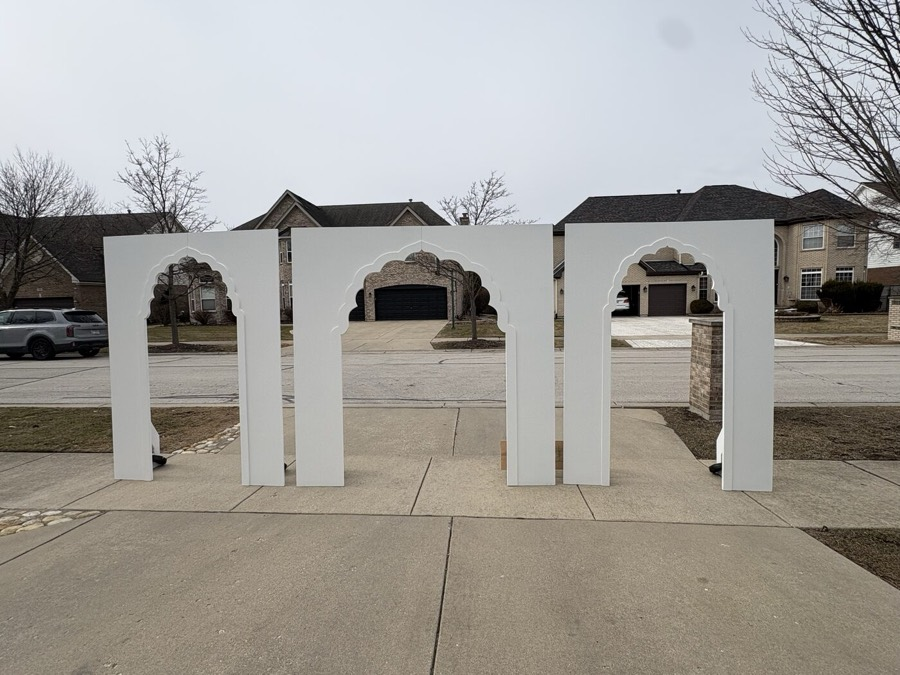
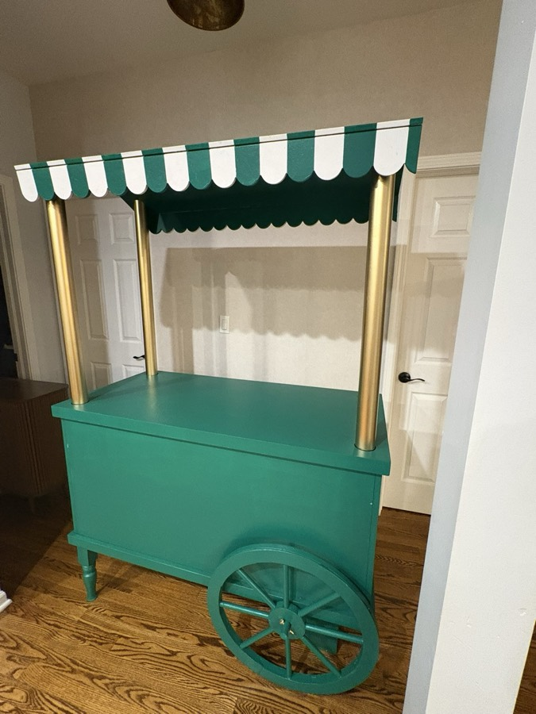
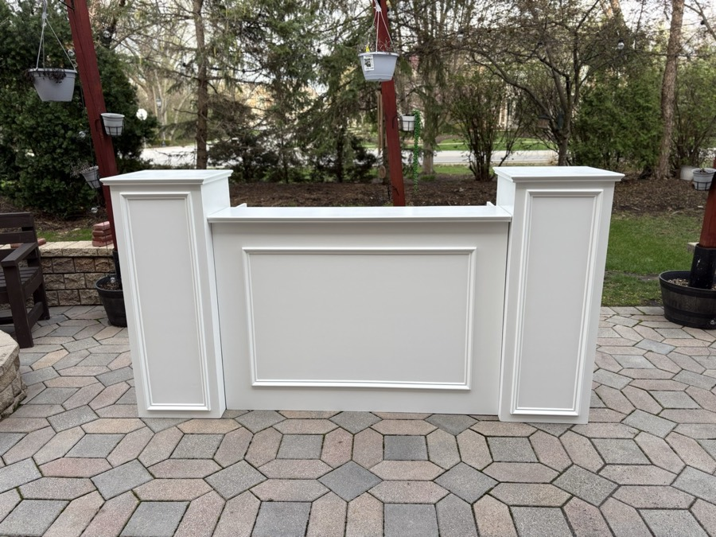
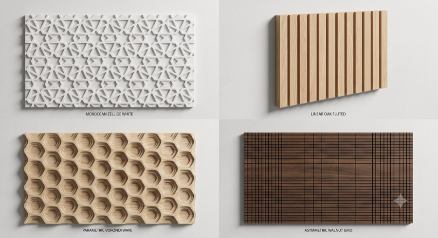

The public site for a two-person fabrication shop in Bloomingdale, Illinois — arches, candy carts, bar fronts, panelled walls, marquee signs. Underneath, it's the proof that a client's website can be the cheap, disposable layer.
Masooma and Habib run a custom fabrication shop out of a garage-sized workshop in the western Chicago suburbs. She designs — layouts, digital models, 3D renderings a client can approve before a single sheet is cut. He runs the floor: CNC machining, structure, finish. Between them they turn out Moroccan arches for weddings, scalloped candy carts, panelled bar fronts, dimensional wall panels, monogram walls and lit marquee signs for corporate galas.
They needed a website. What they got first was the whole business in one app — catalog, pipeline, quotes, client portal. Then the useful half of it was pulled out into OurWorkshop, and this repo was rebuilt as something much smaller and much more interesting: a marketing site that keeps no domain data at all.
Everything dynamic arrives over a documented contract. The catalog is a feed it reads. The inquiry form and the mailing-list signup are two relays it writes. There is a database on the box, and its only job is to back the cache. Pull the plug on the back office and the storefront keeps serving the last good catalog for a week.
In August 2026 the shop repositioned — MH Handcrafted, a wedding maker, became MH Build Studio, a consultative build studio chasing event planners and corporate clients. New name, new graphite-and-timber palette, new structural type, new domain. The app needed exactly one functional change to follow it.




The catalog is a feed — ten minutes fresh, last good payload kept a week and served on any failure, with a back-off so a dead API costs one slow request a minute rather than one per page view.
Honeypot, signed render-time token, server-side length caps, image-only attachment filtering, per-IP throttle. The bot filtering lives here, where the human is; the clean submission relays onward and nothing is stored.
OG tags, JSON-LD and the sitemap all ship in the initial HTML. Google runs JavaScript; the crawler behind an iMessage link preview does not. That single fact is why this stayed Rails instead of going static.
I had it backwards, and I suspect most people do. The rebrand was a clean sweep against a decided spec — palette, type, wordmark, every call site — and it landed well. Then the client read it and asked for the wording restored: the hero, the offer blurbs, the about page, the footer tagline. They'd spent months getting those sentences right with real customers. The graphite-and-timber aesthetic they'd only just seen, and they were happy to keep. Copy was the vetted asset; styling was the disposable one — the opposite of the usual assumption, and worth remembering the next time a redesign starts by rewriting everything.
The domain went the same way. A month of the cutover to their own .com sat blocked on records they had to add inside a Shopify admin they rarely opened. Post-rename the name was wrong anyway, so I registered mhbuildstudio.com in my own account instead and the client dependency evaporated. The app needed one environment variable changed — every canonical URL, the sitemap and robots.txt already derived from the request host — and the old hostnames still 301 with the path intact, which is what carried the indexed pages across.
The part I keep thinking about is what happens after launch. A small shop's website requests are all tiny — a price, a photo, one more product — and each one is too small to be worth a meeting and too annoying to batch. So they land in a queue and go out on their own, and the guardrails are the whole design: one request at a time, nothing that touches deploy config or dependencies, and a stop when the request isn't clear enough to act on. A shop with two people in it doesn't need a retainer. It needs a queue that empties.
This repo is also the reference model for the platform behind it: an OurWorkshop client should be able to run a good public site without paying anyone to build or operate a backend. Two rules make that true for any frontend, not just this one.
Most of this shop's traffic arrives through a link someone pasted into a message. So the first thing to load the page is never a person — it's a link-preview fetcher, and it is nothing like a browser. It runs no JavaScript, it identifies as a decade-old Safari that modern frameworks are happy to turn away, it asks for images a byte range at a time, and it caches a failure as eagerly as a success. Treating that fetcher as a first-class client — server-rendered tags, a permissive browser policy, images served from this origin over a path that answers ranges properly — is why a shared product link opens as a card with a photo on it instead of a bare domain.